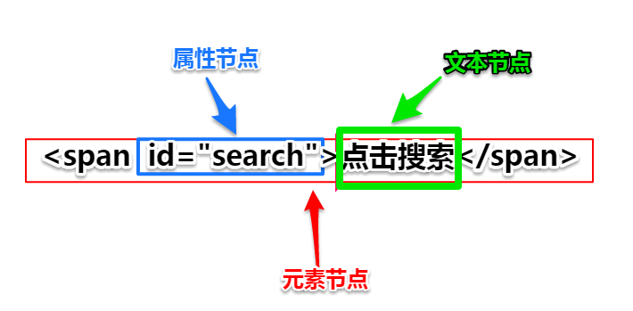

什么是DOM？ Document Object Model
window 浏览器窗口
document 把整个网页看做一个对象
通过操作整个对象，来控制改变网页的内容
document.write();
和window对象的关系
window.document
window.document.body
什么是DOM树？？
DOM元素？ DOM对象？ DOM节点？ 指的是同一个东西吗？
DOM元素的基本操作 （增 、删、改、查）
查询---------
document.getElementById() 通过ID号查找元素
document.getElementsByTagName() 通过标签名称查找元素
document.getElementsByName() 通过name属性来查找元素
document.getElementsByClassName() 通过class属性来查找元素
IE8以下 不支持byClassName方法
增---------
document.createElement() 创建一个DOM元素
box.appendChild(target) 将target元素追加到box元素的内部，此时浏览器才能正确加载并显示元素
parent.insertBefore(newnode, oldnode) 将newnode元素插入到parent元素的内部，同时放在oldnode元素的前面
删除---------
parent.removeChild(child) 将child元素删除，parent是child元素的父亲
node.remove();
改------------
box.style.background = "red";
如何操作自定义属性？
获取一个自定义属性的值
box.getAttribute("index")
修改~~~
box.index = 99;
box.setAttribute("index",99)
对于非行内样式的操作（可修改不可读取）
getComputedStyle(obj, null).top //属性只读
树上的节点有几种类型？
三种类型：
1 元素节点 nodeType 值为 1
2 文本节点 nodeType 值为 3
3 属性节点 ~~~~~~~~~~2

高级操作----查
parentNode //获取父节点
childNodes //获取所有子节点
children //获取所有子标签(非W3C标准)
previousSibling 前一个兄弟节点
nextSibling 后一个兄弟节点
previousElementSibling 前一个兄弟元素（非W3C标准）
nextElementSibling 后一个兄弟元素（非W3C标准）
如何忽略空白节点？
function getElementChildren(obj){
var list = obj.childNodes;
var res = [];
for(var i=0; i<list.length; i++){
if(list[i].nodeType == 1 ){
res.push(list[i]);
}
}
return res;
}
高级操作----位置、大小计算
offsetWidth / clientWidth 计算元素的可视宽度 边框计算在内
offsetHeight / clientHeight 计算元素的可视高度
ele.offsetLeft 计算元素相对于参照物的位置(有定位的父元素)
ele.offsetTop 计算元素相对于参照物的位置(有定位的父元素)
//获取参照物父元素
offsetParent 获取参照物父元素，获取有定位的父元素
高级操作----改
innerHTML 和 innerText 区别？
<ul id="box">xyz
<li>a</li>
<li>b</li>
<li>c</li>
<li>d</li>
</ul>
box.innerHTML的结果是： xyz
<li>a</li>
<li>b</li>
<li>c</li>
<li>d</li>
box.innerText的结果是：
xyz a b c d
innerHTML 和 nodeValue 区别？
文本节点
var txt = document.createTextNode("nihao");
document.body.appendChild(txt);
计算一个元素在页面的绝对位置？
var _left=0,_top=0;
while(obj){
_left += obj.offsetLeft;
_top += obj.offsetTop;
obj = obj.offsetParent;
}
文档碎片（缓存的概念）
document.createDocumentFragment()
缓存可以提高操作效率
文档碎片测试
var t1 = new Date().getTime();
for(var i=0; i<10000; i++) {
var oP = document.createElement("p")
oP.innerHTML = "a";
document.body.appendChild(oP);
}
var t2 = new Date().getTime();
console.log(t2-t1);
var t3 = new Date().getTime();
var frag = document.createDocumentFragment();
for(var i=0; i<10000; i++) {
var oP = document.createElement("p")
oP.innerHTML = "a";
frag.appendChild(oP);
}
document.body.appendChild(frag);
var t4 = new Date().getTime();
console.log(t4-t3);